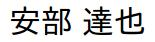

Tatsuya Abe, Ph.D.
Contact Information
Name in Japanese:

Office:
STAIR Lab, Chiba Institute of Technology , 275-0016, Japan.E-mail:
The unique normal form of (λX.abeX@sXair.cenXer)t
GnuPG publickey Professional Memberships:
ACM Professional Member, IPSJ Member, and JSSST MemberPhotos:
SC12 (Salt Lake City) SETTA16 (Beijing) SPIN18 (Málaga)
Research Interests
Design of functional/declarative/imperative programming languages
Lambda-calculus, Curry–Howard isomorphism, type theory, and structural proof theory
Concurrency, message-passing, shared memory, and memory consistency model
Program verification, theorem proving, and model checking
Proof methods for completeness, normalization, confluence, and congruence of bisimilarity
Referred Papers [ORCID]
Makoto Hamana, Tatsuya Abe , and Kentaro Kikuchi
Polymorphic Computation Systems: Theory and Practice of Confluence with Call-by-Value Science of Computer Programming, 187(102322), 2020.
doi: 10.1016/j.scico.2019.102322
Tatsuya Abe A Type System for Data Independence of Loop Iterations in a Directive-Based PGAS Language In Proceedings of the 16th International Conference on Managed Programming Languages and Runtimes (MPLR), pages 50--62, 2019.
doi: 10.1145/3357390.3361021
Tatsuya Abe Local Data Race Freedom with Non-Multi-Copy Atomicity In Proceedings of the 25th International Symposium on Model Checking of Software (SPIN), LNCS 10869, pages 196--215, 2018.
doi: 10.1007/978-3-319-94111-0_12
Kosuke Matsumoto, Tomoharu Ugawa, and Tatsuya Abe
Improvement of a Library for Model Checking under Weakly Ordered Memory Model with SPIN Journal of Information Processing, 26:314--326, 2018.
doi: 10.2197/ipsjjip.26.314
Tatsuya Abe A Verifier of Directed Acyclic Graphs for Model Checking with Memory Consistency Models In Proceedings of the 13th Haifa Verification Conference (HVC), LNCS 10629, pages 51--66, 2017.
doi: 10.1007/978-3-319-70389-3_4
Tomoharu Ugawa, Tatsuya Abe , and Toshiyuki Maeda
Model Checking Copy Phases of Concurrent Copying Garbage Collection with Various Memory Models Proceedings of the ACM on Programming Languages, 1(OOPSLA:53):1--26, 2017.
doi: 10.1145/3133877
Tatsuya Abe , Tomoharu Ugawa, and Toshiyuki MaedaReordering Control Approaches to State Explosion in Model Checking with Memory Consistency Models In Proceedings of the 9th Working Conference on Verified Software: Theories, Tools, and Experiments (VSTTE), LNCS 10712, pages 170--190, 2017.
doi: 10.1007/978-3-319-72308-2_11
Tatsuya Abe and Toshiyuki MaedaA General Model Checking Framework for Various Memory Consistency Models International Journal on Software Tools for Technology Transfer, 19(5):623--647, 2017.
doi: 10.1007/s10009-016-0429-y
Tatsuya Abe and Toshiyuki MaedaConcurrent Program Logic for Relaxed Memory Consistency Models with Dependencies across Loop Iterations Journal of Information Processing, 25:244--255, 2017.
doi: 10.2197/ipsjjip.25.244
Tatsuya Abe and Toshiyuki MaedaObservation-based Concurrent Program Logic for Relaxed Memory Consistency Models In Proceedings of the 14th Asian Symposium on Programming Languages and Systems (APLAS), LNCS 10017, pages 63--84, 2016.
doi: 10.1007/978-3-319-47958-3_4
Tatsuya Abe , Tomoharu Ugawa, Toshiyuki Maeda, and Kousuke MatsumotoReducing State Explosion for Software Model Checking with Relaxed Memory Consistency Models In Proceedings of the 2nd Symposium on Dependable Software Engineering: Theories, Tools and Applications (SETTA), LNCS 9984, pages 118--135, 2016.
doi: 10.1007/978-3-319-47677-3_8
Tatsuya Abe and Toshiyuki MaedaTowards a Unified Verification Theory for Various Memory Consistency Models In Proceedings of Syntax and Semantics of Low-Level Languages (LOLA), short paper, pages 1--2 (online), 2015.
Tatsuya Abe and Toshiyuki MaedaOptimization of a General Model Checking Framework for Various Memory Consistency Models In Proceedings of the 8th International Conference on Partitioned Global Address Space Programming Models (PGAS), Number 14, pages 1--10 (online), 2014.
doi: 10.1145/2676870.2676878
Tatsuya Abe and Toshiyuki MaedaA General Model Checking Framework for Various Memory Consistency Models In Proceedings of the 19th International Workshop on High-Level Parallel Programming Models and Supportive Environments (HIPS), pages 332--341, 2014.
doi: 10.1109/IPDPSW.2014.47
Tatsuya Abe and Toshiyuki MaedaModel Checking with User-Definable Memory Consistency Models In Proceedings of the 7th International Conference on Partitioned Global Address Space Programming Models (PGAS), short paper, pages 225--230, 2013.
Tatsuya Abe , Toshiyuki Maeda, and Mitsuhisa SatoModel Checking Stencil Computations Written in a Partitioned Global Address Space Language In Proceedings of the 18th International Workshop on High-Level Parallel Programming Models and Supportive Environments (HIPS), pages 365--374, 2013.
doi: 10.1109/IPDPSW.2013.90
Tasuku Hiraishi, Masaru Ueno, Tatsuya Abe , Motoharu Hibino, Takeshi Iwashita, and Hiroshi Nakashima
Xcrypt on Lisp: a Scripting System for Job Level Parallel Programming in Lisp In Proceedings of International Lisp Conference (ILC), pages 107--114, 2012.
Tatsuya Abe , Toshiyuki Maeda, and Mitsuhisa SatoModel Checking with User-Definable Abstraction for Partitioned Global Address Space Languages In Proceedings of the 6th International Conference on Partitioned Global Address Space Programming Models (PGAS), pages 1--10 (online), 2012.
Tatsuya Abe and Mitsuhisa SatoOn-the-Fly Synchronization Checking for Interactive Programming in XcalableMP In Proceedings of the 5th International Workshop on Parallel Programming Models and Systems Software for High-End Computing (P2S2), pages 29--37, 2012.
doi: 10.1109/ICPPW.2012.8
Tatsuya Abe and Mitsuhisa SatoAuto-Tuning of Numerical Programs by Block Multi-Color Ordering Code Generation and Job-Level Parallel Execution In Proceedings of the 7th International Workshop on Automatic Performance Tuning (iWAPT), LNCS 7851, pages 404--419, 2012.
doi: 10.1007/978-3-642-38718-0_37
Tasuku Hiraishi, Tatsuya Abe , Takeshi Iwashita, and Hiroshi Nakashima
Xcrypt: a Perl Extension for Job Level Parallel Programming In Proceedings of the 2nd International Workshop on High-Performance Infrastructure for Scalable Tools (WHIST), pages 1--9 (online), 2012.
Tatsuya Abe , Takashi Higuchi, Rintaro Imai, Yoshiki Kinoshita, Satoshi Nakano, Keishi Okamoto, Masaya Saito, and Makoto TakeyamaFormalization of System LSI Specification and Automatic Generation of Verification Items In Supplementary Proceedings of Testing of Software and Communicating Systems: the 20th IFIP TC 6/WG 6.1 International Conference and the 8th International Workshop (TESTCOM/FATES), short paper, pages 75--76, 2008.
Tatsuya Abe Completeness of Modal Proofs in First-Order Predicate Logic JSSST Computer Software, 24(4):165--177, 2007.
doi: 10.11309/jssst.24.4_165
Tatsuya Abe A Concurrent System of Multi-Ported Processes with Causal Dependency In Proceedings of the 2nd Asian Symposium on Programming Languages and Systems (APLAS), LNCS 3302, pages 146--162, 2004.
doi: 10.1007/978-3-540-30477-7_10
Educations, Employments, and Fundings [ORCID]
Preprints
Reducing state explosion for software model checking with relaxed memory consistency models. [arXiv]
Split of classical logic. [pdf]
Kripke and meta-logical completeness via Curry-Howard isomorphism. [pdf]
Softwares
Hassign : a tool to assign persons to rooms by using an external constraint solver.VeriDAG : a verifier of program graphs for model checking with memory consistency models.McSPIN : a model checker with memory consistency models.XMP-mode : Emacs major mode for editing XcalableMP programs.Xcrypt : a job-level parallel scripting language that helps automating Plan-Do-Check-Act (PDCA) cycles.Calfwoid: an Android interface of diary in Emacs toward Calfw .
mmott : provides user-defined timetables for broadcasting listening (BCL) to shortwave bands.Xtract: enables us to extract strings by designating columns, ranges, Perl's statements and scripts.